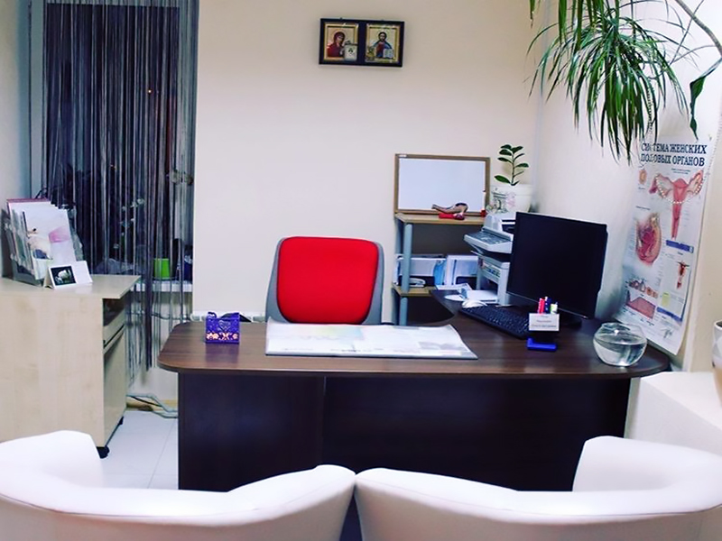

КОНСУЛЬТАЦИЯ

Консультация и осмотр проходит в современном комфортном кабинете, с максимально бережным отношением, а также использованием уникальных методов диагностики и лечения гинекологических заболеваний. Главная наша задача — сохранить и восстановить здоровье женщины. Обратившись к нашим специалистам, Вы почувствуете заботу о Вашем здоровье и получите гарантированно качественное обследование и лечение.
Записаться на приём